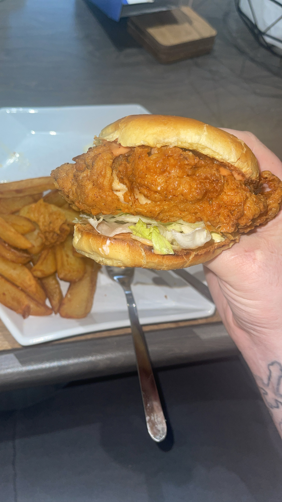

'WHAM! Burger'

Description
Friday 20th May 2022: I made some buttermilk chicken
burgers that were brilliant! So well cooked and flavoursome,
one of the very best burgers I have made in recent times!
Ingredients
- Chicken thigh
- buttermilk (do not season this!)
- seasoned flour
- cornflour
- brioche bun
- any sauce you would like
- salad
Steps
- Firstly, add your chicken thigh to the buttermilk, fridge
and cover for at least one hour.
- Once taken out, combine your seasoning with the flour
and cornflour. Coat the wet thigh in this dry. Once this is done,
place your chicken in oil of your choice to fry.
- Fry for around 12 minutes. I like to fry this off
and then place this in the oven to make sure this is completely
cooked.
- Once done, assemble and scran!
- ENJOY!